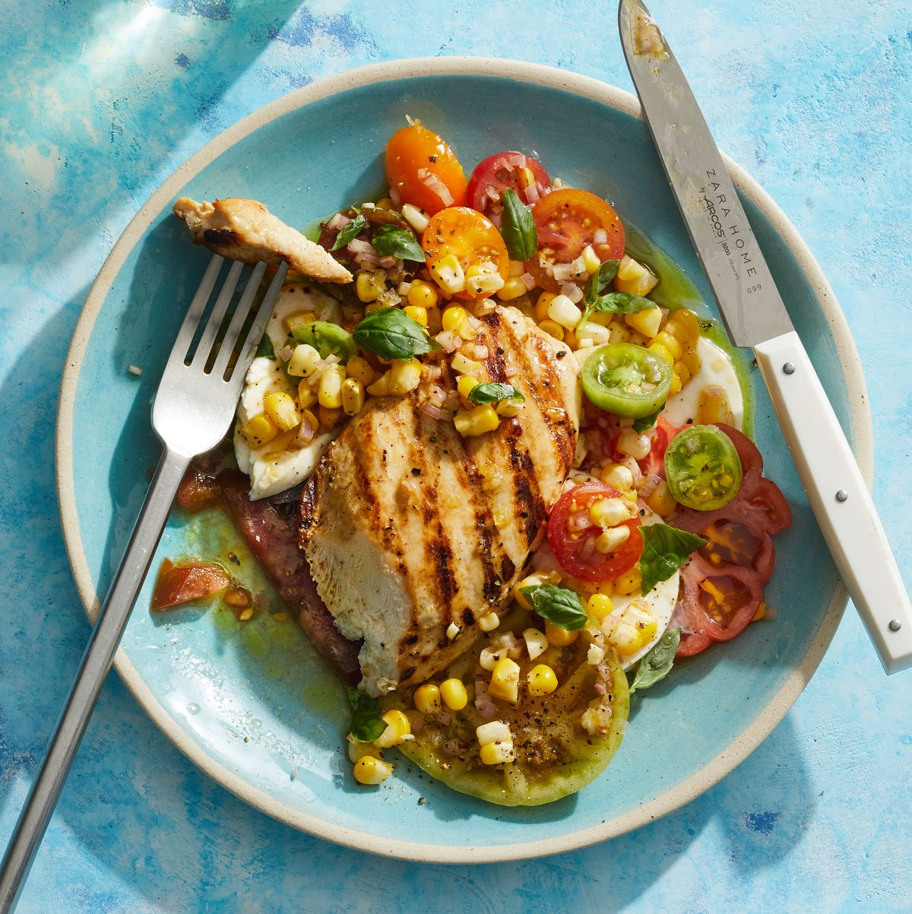

Grilled Chicken Caprese

Description
Turn the classic Italian salad of tomato, basil, and mozzarella into a complete meal with juicy grilled chicken and fresh corn.
Ingredients
- 6 ears fresh corn, shucked
- 12 oz. orecchiette
- 1 oz. Romano cheese, finely grated, plus more for serving
- Kosher salt
- 2 scallions, chopped
- 1/2 c. basil, plus more for serving
- Hot sauce, for serving
Steps
- Bring large pot of salted water to a boil. Add corn and cook 2 minutes. Transfer to cutting board.
- Add orecchiette to same pot and cook per package directions. Reserve 1 cup cooking water, then drain pasta.
- When corn is cool enough to handle but while pasta is still cooking, cut off kernels (you should have about 3 cups). Transfer 2 cups to blender along with Romano cheese, 3/4 cup pasta cooking water, and 1/4 teaspoon salt; puree until very smooth.
- Toss pasta with corn puree, adding some reserved pasta water, 1 Tbsp at a time, if pasta seems dry. Fold in reserved corn, scallions, and basil. Serve sprinkled with additional cheese and basil and with hot sauce if desired.